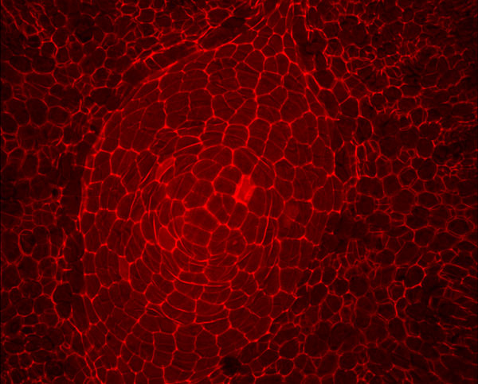

Musical Quicksort
Michael Hoy |
Boston Creative Coders |
December 2012
Musical Quicksort

Meristem of Gnetum gnemon
Photo: Stephanie Conway
; Division defined recursively
(define div
(lambda (n d)
(cond
((< n d) 0)
(else
(+ 1 (div (- n d) d))))))
; Division defined recursively
(define div
(lambda (n d)
(cond
((< n d) 0)
(else
(+ 1 (div (- n d) d))))))
(div 6 2)
(+ 1 (div 4 2))
(+ 1 (+ 1 (div 2 2)))
(+ 1 (+ 1 (+ 1 (div 0 2)))
(+ 1 (+ 1 (+ 1 0)))
(+ 1 (+ 1 1))
(+ 1 2)
3
(define quicksort
(lambda (l)
(let ((piv (pivot l)))
(if (equal? piv 'done) l
(let ((parts (prt piv l '() '())))
(append (quicksort (car parts))
(quicksort (cadr parts))))))))
(define pivot (lambda (l)
(cond ((null? l) 'done)
((null? (cdr l)) 'done)
((<= (car l) (cadr l)) (pivot (cdr l)))
(#t (car l)))))
(pivot '(1 2 3 4 3 7)) => 4
(pivot '(1 2 3 4)) => 'done
(define prt (lambda (piv l p1 p2)
(if (null? l) (list p1 p2)
(if (< (car l) piv) (prt piv (cdr l) (cons (car l) p1) p2)
(prt piv (cdr l) p1 (cons (car l) p2))))))
(prt 4 '(1 2 3 4 3 7) '() '())
=> ((3 3 2 1) (7 4))
(define quicksort
(lambda (l)
(let ((piv (pivot l)))
(if (equal? piv 'done) l
(let ((parts (prt piv l '() '())))
(append (quicksort (car parts))
(quicksort (cadr parts))))))))
(quicksort '(0 3 -21 0 -5 -2 -12)) => (-21 -12 -5 -2 0 0 3)
(0 3 -21 0 -5 -2 -12)
| |
(-12 -2 -5 0 -21 0) (3 )
| |
(-21 -5 -12) (0 0 -2)
| | | |
(-12 -21) (-5 ) (-2 ) (0 0 )
| |
(-21 ) (-12 )
(define quicksort
(lambda (l)
(define iter
(lambda (l x y)
(let ((piv (pivot l)))
(if (eq? 'done piv) ((lambda ()
(play-recursive-note
(list (car l))
(+ 1 x)
(+ 1 y))
l))
(let ((parts (qpartition piv l '() '())))
(play-recursive-note (list piv) x y)
(append (iter (car parts) (- x 1) (+ 1 y) )
(iter (cadr parts) (+ x 1) (+ 1 y) )))))))
(iter l 0 0)))
(define play-recursive-note
(lambda (l x y)
(play-note
(now) ; When
synth ; Instrument
60 ; Note
90 ; Volume
(* 0.15 *second*)))) ; Duration
(define play-recursive-note
(lambda (l x y)
(play-note
(+ (now) (* y (* 0.3 *second*))) ; When
synth ; Instrument
(+ (car l) 60) ; Note
(- 90 (* y 10)) ; Volume
(* 0.15 *second*)))) ; Duration
(define play-recursive-note
(lambda (l x y)
(cond ((> 40 (abs (car l)))
(play-note
(+ (now) (* y (* 0.3 *second*))) ; When
synth ; Instrument
(+ (car l) 60) ; Note
(- 90 (* y 10)) ; Volume
(* 0.15 *second*))) ; Duration
(else
'()))))
(define loop
(lambda ()
(quicksort '(0 3 -21 0 -5 -2 -12))
(callback (+ (now) (* (* 6 0.3) *second*)) 'loop)))
(loop)
[insert live coding music.]
The ability to visualize the consequences of [actions]
is crucial to becoming an expert programmer, just as it is
in any synthetic, creative activity...
— Structure and Interpretation of Computer Programs
Meristem of Gnetum gnemon
Photo: Stephanie Conway
#